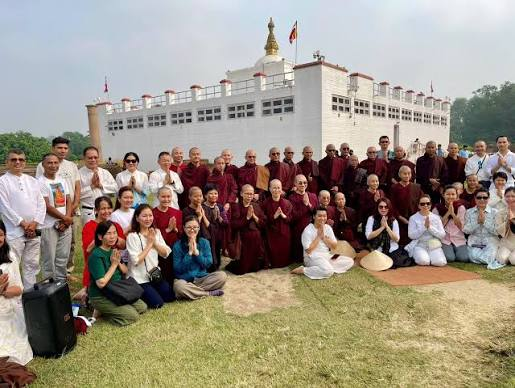

Buddha Jayanti
बुद्ध जयन्ती
बुद्ध जयन्ती भगवान् गौतम बुद्धको जन्म, ज्ञान प्राप्ति र महापरिनिर्वाणको सम्झनामा विश्वभर मनाइने शान्ति र करुणाको पर्व हो।
- तिथि: वैशाख शुक्ल पूर्णिमा
- मुख्य सन्देश: अहिंसा, शान्ति, करुणा र दया
- मुख्य गतिविधि: दीप प्रज्वलन, शान्ति र्याली, पूजा/ध्यान, र सङ्घदान
Visuals of Buddha Jayanti


Buddha Jayanti Music
१. बुद्ध जयन्ती किन मनाइन्छ? (त्रिसंयोग दिवस)
वैशाख शुक्ल पूर्णिमाका दिन भगवान् बुद्धको जीवनका तीन ठूला घटनाहरू घटेका थिए, त्यसैले यसलाई त्रिसंयोग दिवसका रूपमा मनाइन्छ:
- जन्म: ईसापूर्व ५६३ मा लुम्बिनीमा सिद्धार्थ गौतमको जन्म भएको थियो।
- ज्ञान प्राप्ति: ३५ वर्षको उमेरमा बोधगयामा कठोर तपस्यापछि बुद्धत्व (ज्ञान) प्राप्त भएको थियो।
- महापरिनिर्वाण: ८० वर्षको उमेरमा कुशीनगरमा उहाँको महापरिनिर्वाण (देहावसान) भएको थियो।
२. बुद्ध जयन्तीको महत्त्व र सन्देश
बुद्ध जयन्तीले संसारलाई अहिंसा, शान्ति, करुणा र भाइचाराको सन्देश दिन्छ। बुद्धले प्रतिपादन गर्नुभएको 'चार आर्य सत्य' र 'अष्टाङ्गिक मार्ग' (मध्यम मार्ग) ले मानिसलाई दुःखबाट मुक्ति पाई सही ढङ्गले जिउने बाटो देखाउँछ।
३. कसरी मनाइन्छ?
यस दिन लुम्बिनी, स्वयम्भू, बौद्धनाथ लगायतका चैत्य र गुम्बाहरूमा दीप प्रज्वलन गरी पूजाआजा गरिन्छ। बुद्धका उपदेशहरू स्मरण गर्दै विश्वशान्तिको प्रार्थना गरिन्छ र मानिसहरूलाई दान-पुण्य तथा अहिंसाको पालना गर्न प्रेरित गरिन्छ।
१. कति दिन र कसरी मनाइन्छ?
बुद्ध जयन्ती मुख्यत: १ दिन (वैशाख पूर्णिमा) मनाइन्छ। तर मुख्य बौद्ध स्थलहरूमा २-३ दिन अघिदेखि नै सरसफाइ, सजावट र शान्ति पदयात्रा (र्याली) जस्ता कार्यक्रमहरू सुरु हुन्छन्।
२. बुद्ध जयन्तीमा के-के हुन्छ?
- गुम्बा र चैत्यमा दीप प्रज्वलन: लुम्बिनी, स्वयम्भू, बौद्धनाथ लगायतका विहार र गुम्बाहरूलाई रङ्गीचङ्गी बत्ती र बौद्ध ध्वजा (लुङता) ले सजाइन्छ र हजारौँ बत्ती/दियो बालिन्छ।
- प्रभातफेरी र शान्ति र्याली: बिहानै "विश्वमा शान्ति होस्" भन्ने सन्देशसहित शान्ति पदयात्रा र बुद्धको मूर्तिसहितको शोभायात्रा निकालिन्छ।
- पूजाआजा र सूत्र पाठ: बौद्ध भिक्षु, लामा र लामा गुरुहरू भेला भई बुद्ध पूजा, वन्दना र 'त्रिपिटक' तथा बौद्ध ग्रन्थहरूको पाठ गर्छन्।
- दान-पुण्य र खीर वितरण: बुद्ध जयन्तीका दिन भिक्षुहरूलाई सङ्घदान गर्ने, असहायलाई सहयोग गर्ने र शुद्ध 'खीर' वा शाकाहारी भोजन पकाएर बाँड्ने चलन छ।
- अहिंसा र ध्यान: धेरै मानिसहरू यस दिन पञ्चशील (अहिंसा, सत्य, चोरी नगर्ने आदि) को पालना गर्छन्, शाकाहारी भोजन गर्छन् र ध्यान (Meditation) मा बस्छन्।
Buddha Jayanti's Most Beautiful Aspect
"बुद्ध जयन्तीको सबैभन्दा सुन्दर पक्ष भनेकै 'आन्तरिक शान्ति र करुणा' हो। साँझमा गुम्बाभरि बलिरहेका हजारौँ बत्तीहरू, हावामा गुन्जिने मन्त्र, र विश्वशान्तिको टोली भावनाले हरेक मानिसको मनमा गहिरो शान्ति र दयाको भाव जगाउँछ।"